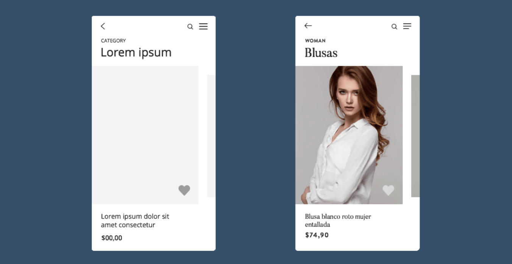

6. UX
Wireframes och prototyper
Och lite annat smått och gott.
Flöde - hur användaren kan röra sig i applikationen
Vilka skärmar består applikationen av?
Wireframes?
Wireframes är statiska.
Wireframes är som ett skelett, dvs inga bilder eller faktiskt content.
Wireframes är en basic layout som visar strukturella guidelines.
Dessa kan följas och användas av både utvecklare och designers.
Dessa representerar ofta positionering, visuell hirerarki (består av linjer och texter i gråskala).
Prototyper
En prototyp är en förlaga eller testmodell som används i utvecklingen.
Syftet med en prototyp är att:
Kommunicera och visualisera ideér.
Undersöka olika lösningar.
Väga fördelar mot nackdelar.
Upptäcka brister och fallgropar.
D.v.s. prototyper används INNAN produkten sätts i produktion.
Varför använda prototyper?
När de används korrekt kan de spara mycket tid och pengar.
Man kan prova applikationer, koncept på användarna innan man har lagt hundratals/tusentals timmar på utveckling.
Man kan undersöka hur användaren reagerar eller förstår produkten.
Att tänka på angående prototyper?
En prototyp är precis vad namnet säger, en prototyp, behandla den som det!
Det är lätt att man lägger alldeles för mycket tid på en prototyp, snyggar till den, gullar med den och då fyller den inte sitt syfte på samma sätt.
Kill your darlings! Skapa prototyper använd den till det den är till för och kassera den! Detta kan bli svårare ju mer överflödig tid man lägger.
Typer av prototyper
Pappersprototyper (low fidelity)
Digitala prototyper (hi fidelity)
Pappersprototyper
Pappersprototyper (low fi)
Rita, skissa, klipp och klistra
Används tidigt i processen
+ Snabbt och billigt sätt att börja testa och visualisera
+ Enkla att modifiera
- Svårare att distribuera
- Kanske inte så likt den riktiga produkten och ger inte samma känsla som en riktig app
Digitala prototyper (high fidelity)
Photoshop, Adobe XD eller annan mjukvara.
Senare i processen - för att få en sista bekräftelse innan påbörjad utveckling.
+ Ger en mer verklig bild av hur produkten fungerar och känns
+ Bra vid usability tester.
- Tar mer tid och resurser.
- Kan misstas för den slutliga produkten.
Wireframes vs Prototyper

Gränssnitt - Interface
Ett gränssnitt är något där två system, ämnen, organisationer etc, möts och interagerar.
Fysiskt kan det handla om att trycka på en knapp på en enhet.
Perceptuellt - Se saker på en skärm eller höra ljud.
99% av det man designar har ett gränssnitt som någon form av användare kommer i kontakt med.
Visuell hierarki
Visuell hierarki är en uppsättning principer som är till hjälp när man vill strukturera visuell information
Vad är viktigt på din sida? Vad vill du att användaren skall se? Prioritering.
Vi kan använda oss av:
Text storlek
Kontraster
Färg
Negativt utrymme
Former
Afforances
"Affordance" betyder vad du kan göra med ett objekt.
Checkbox - Denna förväntas du kunna kryssa i eller kryssa ur
Slider - Denna förväntas du kunna dra fram och tillbaka.
False affordance - Användaren uppfattar det som att man kan göra något med ett objekt, vilket inte är fallet.
Hidden affordance - Det finns funktionalitet som användaren inte hittar eller förstår.
Gränssnittskomponent
En grundläggande komponent som används vid uppbyggnad av ett grafiskt användargränssnit.
Kan ibland kallas för widget.
Exempel kan vara: checkboxes, radio buttons, dropdown lists, buttons, toggles, text fields, tooltips, icons, progress bar, notifications, message boxes, modal windows..
Tools & Software
PEN & PAPER Sketch(most common)
Invision Studio (upload to invision)
Balsamiq, Axure
Adobe XD
JustInMind
Proto.io (web based)
Framer (animations), Origami (animations)
Zeplin
Photoshop, Illustrator
Many many more...